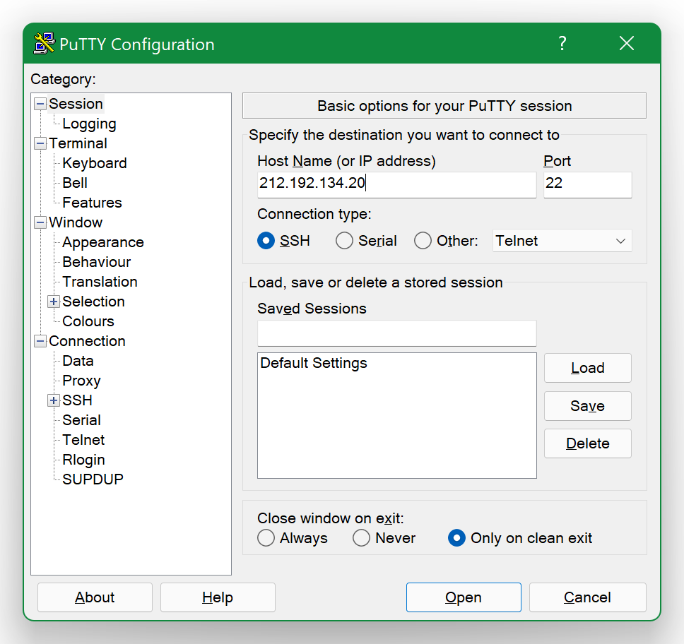
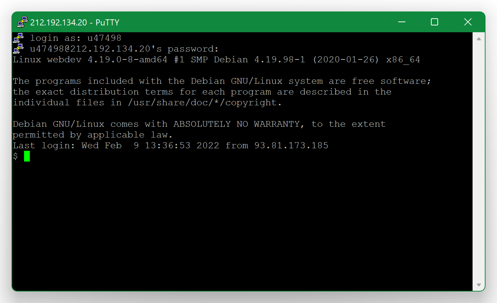
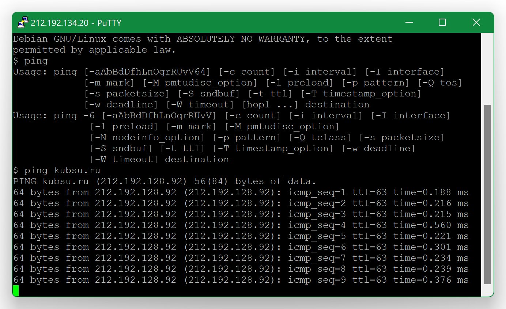
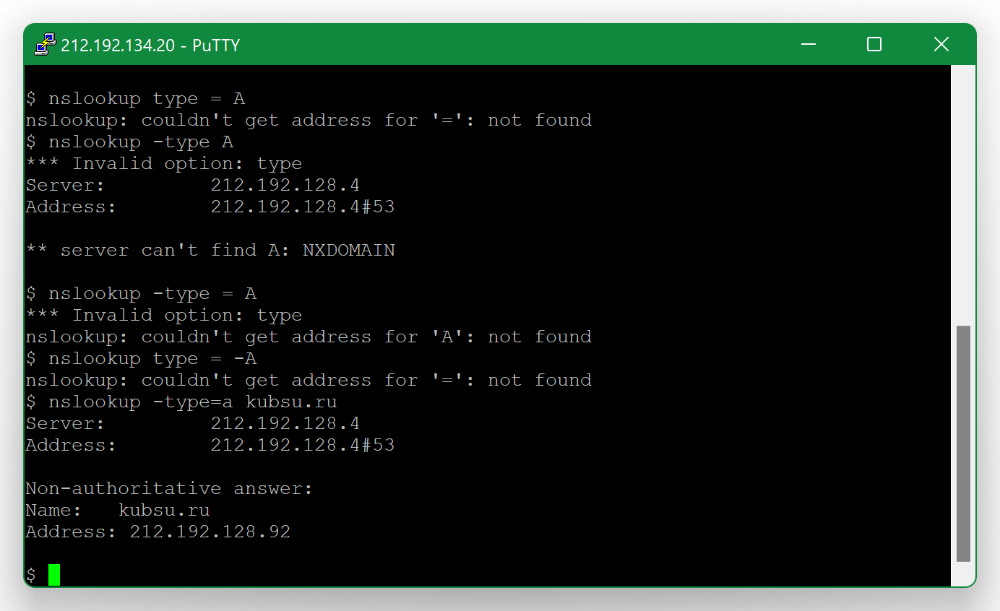
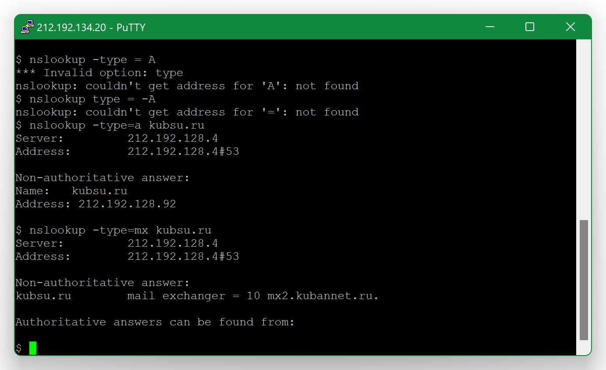
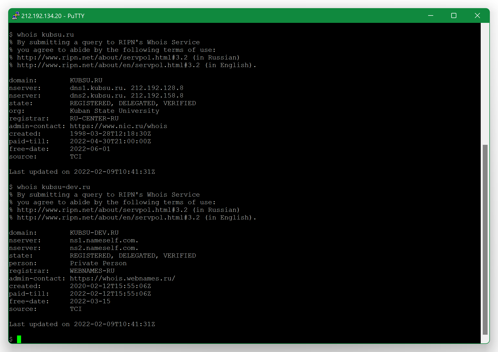
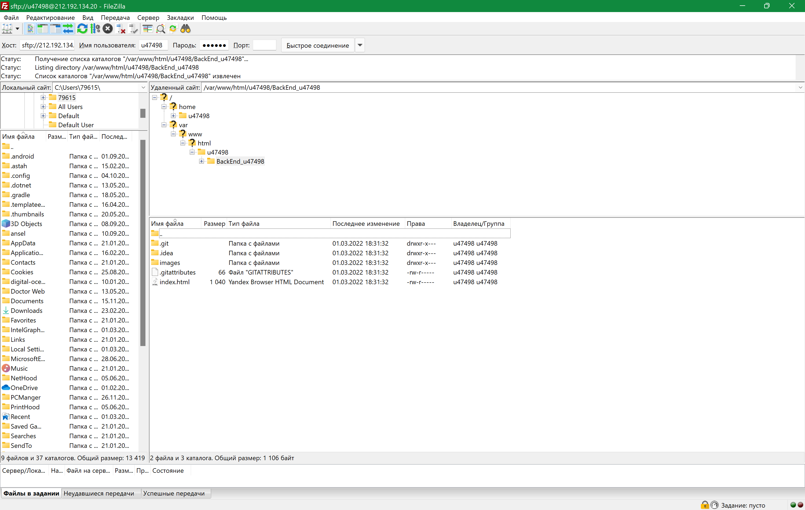

1) С помощью PuTTY подключаемся к удаленному серверу через SSH по 22 порту
 2) С помощью команды ping узнаём IP-адрес веб-сервера, в нашем случае - kubsu.ru
3) С помощью команды nslookup мы получаем информацию от конкретного DNS - kubsu.ru
 4) С помощью команды whois узнаём дату регистрации домена kubsu.ru и kubsudev.ru
5) С помощью клиента FileZilla подключились к учебному серверу
